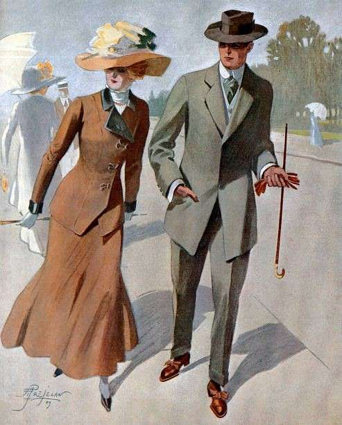
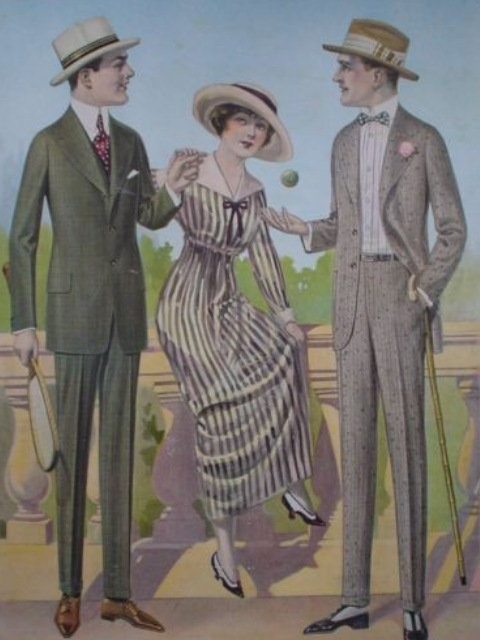
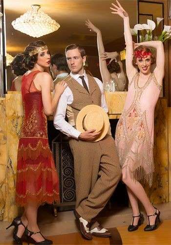

Între 1900 și 1909, moda era marcată de eleganță și opulență, caracteristice perioadei edwardiene. Femeile purtau rochii lungi cu siluete în formă de S, obținute prin corsete strânse care accentuau talia și fuste largi care adăugau volum. Materialele preferate erau bogate și luxoase, precum mătasea, satinul și dantela, iar rochiile erau adesea împodobite cu broderii și volane delicate. Accesoriile elaborate, cum ar fi pălăriile mari, decorate cu flori, pene și panglici, erau esențiale pentru completarea ținutelor feminine. Bărbații purtau costume formale, de obicei compuse din jachete de dimineață, veste și pantaloni asortați, completate cu pălării melon sau cilindru. Stilul masculin era sobru și elegant, reflectând statutul și respectabilitatea purtătorului. Tendințele modei din această perioadă erau influențate de dorința de a exprima statutul social și prosperitatea, într-un context de stabilitate economică și culturală. În ansamblu, moda anilor 1900-1909 reflecta valorile și aspirațiile societății edwardiene, punând accent pe rafinament, detalii complexe și o estetică grandioasă.
Între 1910 și 1919, moda a trecut prin schimbări semnificative, influențate de evenimentele sociale și politice ale vremii, în special Primul Război Mondial. În prima parte a deceniului, stilurile erau încă elaborate, dar au început să devină mai simple și mai practice pe măsură ce războiul a progresat. Femeile purtau rochii cu linii mai fluide și mai relaxate, fără corsetele strânse ale deceniului anterior. Siluetele s-au alungit și s-au simplificat, iar talia s-a coborât. Rochiile de zi erau adesea confecționate din materiale mai practice, cum ar fi bumbacul și lâna, reflectând nevoia de funcționalitate. Moda masculină a devenit, de asemenea, mai practică. Bărbații purtau costume mai simple și mai confortabile, cu sacouri mai scurte și pantaloni mai largi. Uniformele militare au influențat și moda civilă, aducând un stil mai utilitar și funcțional. Perioada 1910-1919 a fost marcată de tranziția de la opulența edwardiană la simplitatea și funcționalitatea dictate de circumstanțele războiului, reflectând schimbările sociale și economice ale timpului.
În anii 1920, moda a fost definită de spiritul vibrant și liber al perioadei interbelice, cunoscută și sub numele de "Epoca Jazzului" sau "Anii Nebuniei". Rochiile femeilor au devenit mai scurte, stilul garçonne câștigând popularitate, iar siluetele s-au emancipat de corsete. Femeile au adoptat rochii drepte, fără talie, cu linii simple și fluide, adesea accesorizate cu mărgele și franjuri. Pălăriile cloche au devenit un simbol al acestei epoci, iar coafurile bob au fost la modă. Moda masculină a fost influențată de stilul "flapper", cu costume mai scurte și mai ajustate, pălării fedora și pantaloni cloș. Aspectul general era unul mai relaxat și mai puțin formal, reflectând dorința de libertate și nonconformism.
